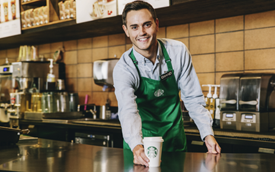
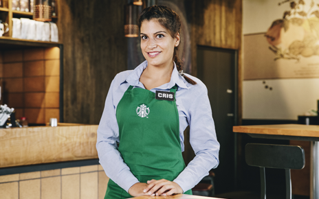
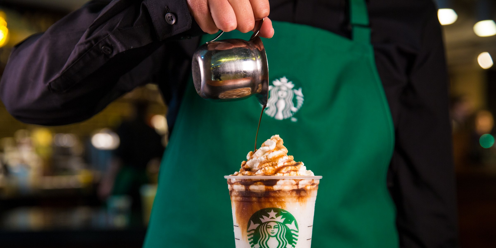

| Puesto |
Descripción |
Imagen De Demostración |
| "Partners" |
En Starbucks llamamos Partners a nuestros empleados y empleadas, porque sin duda forman parte de este proyecto como cualquier otro socio
Esto solo es posible gracias a nuestros Partners, que siempre están dispuestos a dar el máximo de sí mismos, trabajando con pasión y con una actitud positiva.
- "Supervisor":
- Serás la persona responsable del turno. Esto significa que darás soporte al Store Manager, gestionando el negocio durante el turno
Liderarás al equipo de baristas para garantizar un servicio excelente, lo que se traduce en la satisfacción de nuestros clientes.
- Cumplir con estos requisitos
-
- Saber de gestion de negocios
- Responsabilidad
- Trabajar en equipo
- Alcanzar objetivos
|
 |
| Store Manager |
Te convertirás en el líder de la tienda e inspirarás a tu equipo preocupándote por su formación y desarrollo profesional,
uno de tus objetivos es ayudarles a lograr sus retos profesionales, también, garantizarás el cumplimiento de los procesos de calidad de nuestros productos.
- "Objetivos":
-
- Implementar Planes de Negocio
- Gestionar los negocios
- Asegurar el rendimiento financiero
|
 |
| Barista |
Un barista de Starbucks prepara y entrega una bebida a un cliente..
|
 |